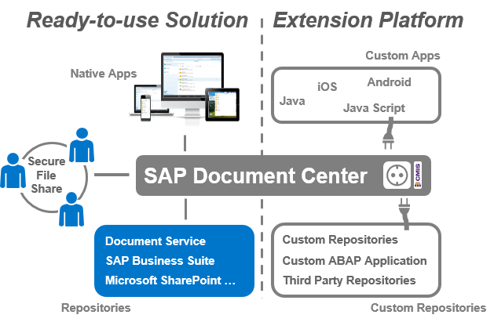

SAP Document Center
Use SAP Document Center to access and share business content stored in your existing document management systems, by connecting them to your cloud application.
SAP Document Center helps you provide a seamless user experience to your business users by integrating file access into the SAP Fiori Launchpad, SAP Jam, and SAP Business Suite applications. Using the native mobile apps, your employees can access business content everywhere, online or offline - so they can focus on business anytime, anywhere.
SAP Document Center empowers your employees to share files securely with business partners, ensuring compliance with business policies and external regulations for data privacy and data protection.
SAP Document Center helps you innovate. Integrate file sharing capabilities into your existing applications. Expose tailored business content through the ABAP connector implementation. Leverage state-of-the-art document management capabilities to integrate into your own apps (HTML5, iOS, Android, Windows Mobile, …). Or use the SAP Cloud Platform Document service to build completely new content-rich applications.
SAP Document Center provides a ready-to-use solution for sharing content based on the SAP Cloud Platform, as well as an extension platform to integrate custom repositories and custom clients. In addition, it can be integrated as a tile into the SAP Fiori launchpad. This way, SAP Document Center enables access to existing on-premise business content, for example, documents that are stored in Microsoft SharePoint or SAP Business Suite. Users can share content to collaborate with their business partners in a compliant way. Moreover, business document templates and standards are available company-wide.
On top of the ready-to-use solution, you can use SAP Document Center to integrate a sharing functionality into your existing applications, implement your own clients for advanced scenarios, and extend ABAP connectivity to support your business processes.
